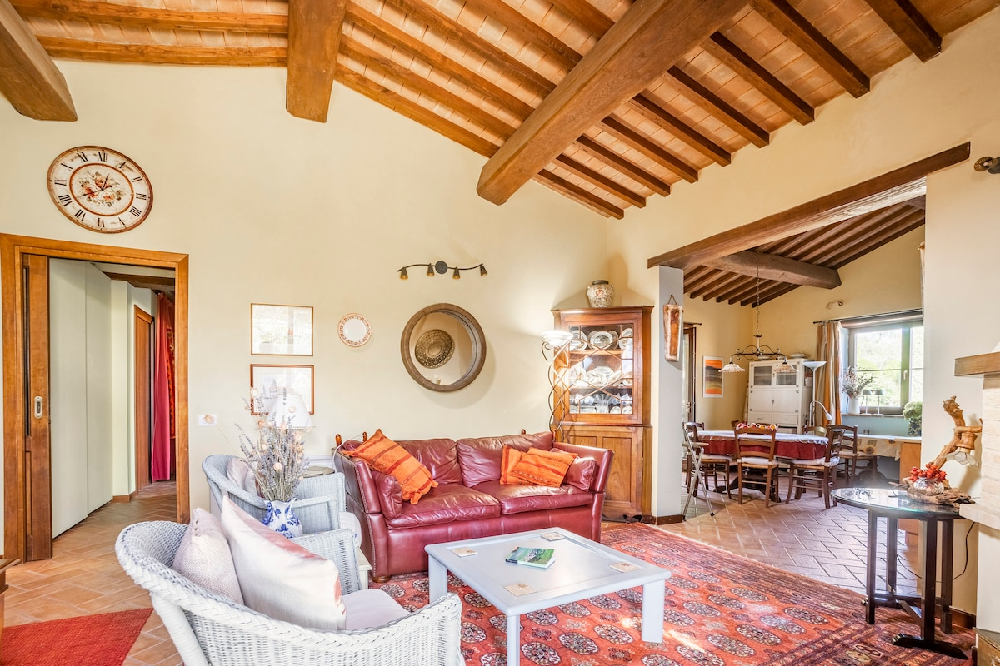
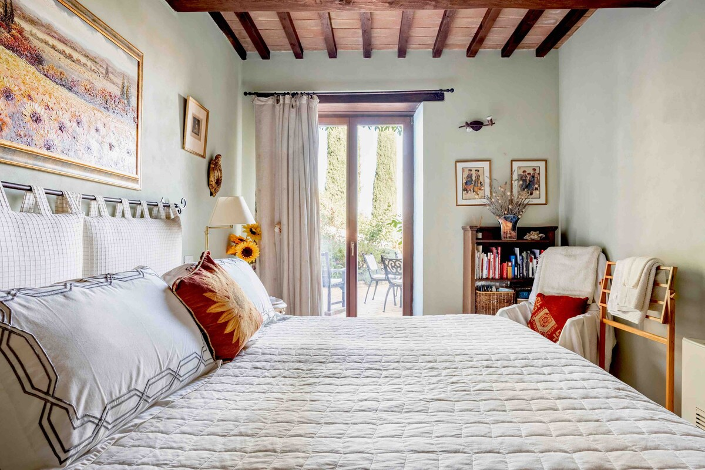
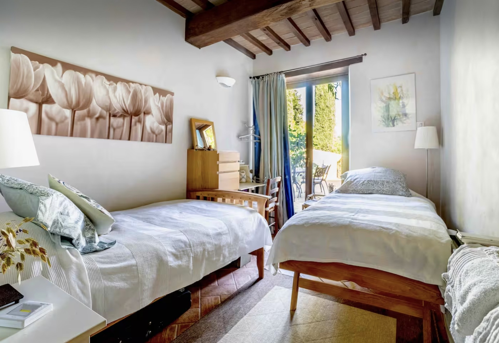
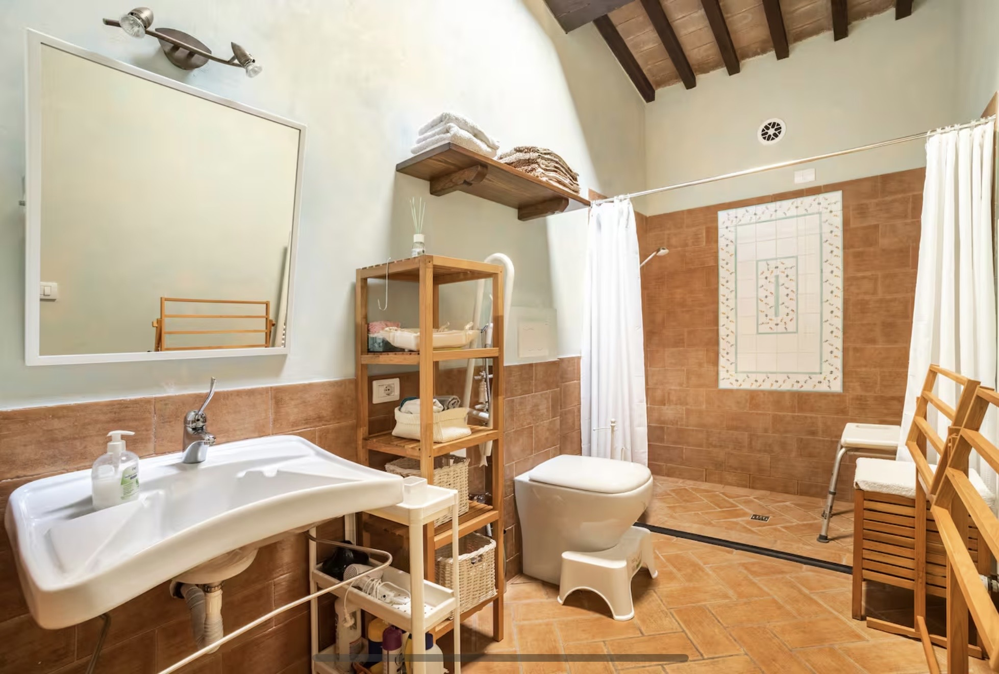
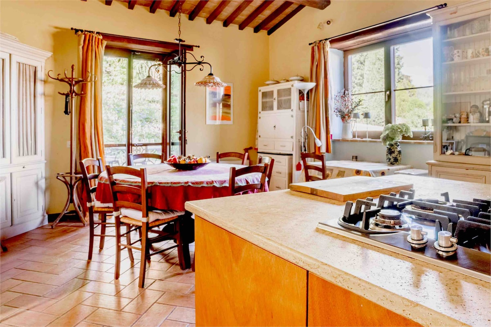
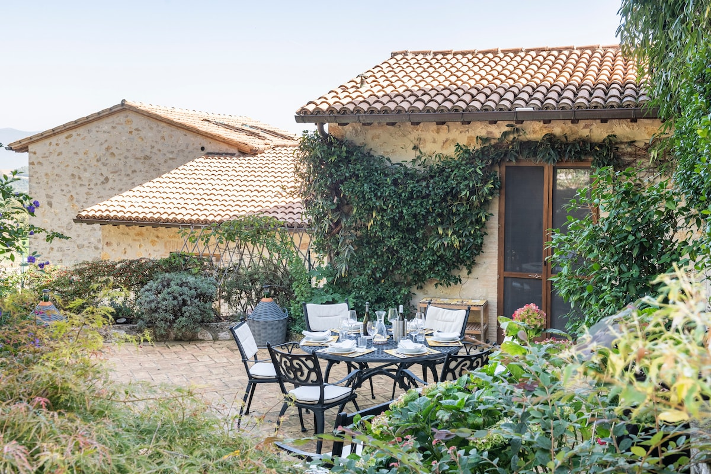
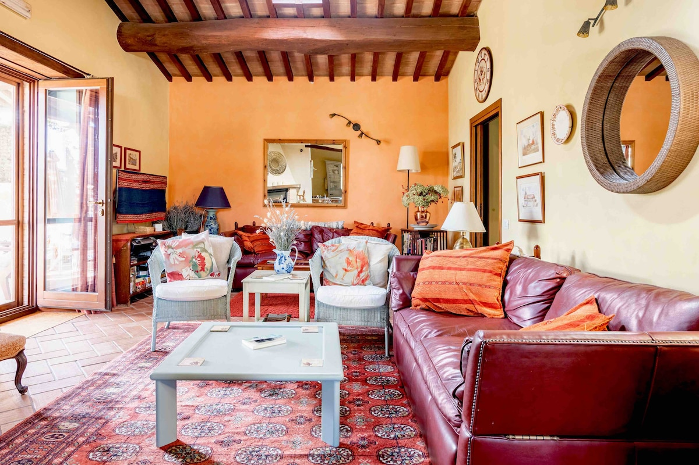
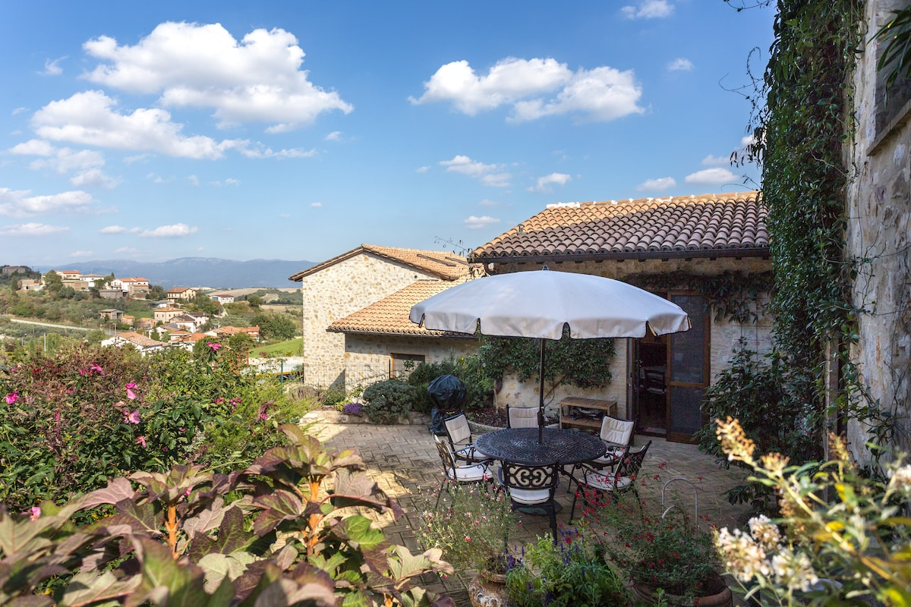

Sismano · Umbria · Italy
A peaceful retreat in the green heart of Italy, with beautiful views across the Umbrian hills.
Nestled in the tiny medieval hamlet of Sismano, La Sosta di Sismano offers an authentic escape into the Umbrian countryside. Umbria — il cuore verde d'Italia, the green heart of Italy — is a land of rolling hills, ancient olive groves, and vineyards stretching to the horizon. Here, time moves a little slower and every evening brings a sunset you won't forget.
Everything you need for an unforgettable stay in the Italian countryside.
Sismano sits just south of Todi, surrounded by medieval hill towns, with easy day trips to Orvieto, Assisi, Deruta, Spoleto, and even Rome.
Walk through olive groves, visit local wineries, browse Deruta's pottery workshops, or simply enjoy long Italian dinners under the stars.
A thoughtfully decorated two-bedroom home for up to 4 guests, blending rustic Umbrian charm with everything you need to feel at home.
A glimpse of life at La Sosta di Sismano.








from 33 reviews
Discovered Umbria at 17 and eventually made Sismano her adopted home. Passionate about walks, hiking, gardening, local festivals, and food. Loves the pastoral charm and warmth of the Umbrian people.